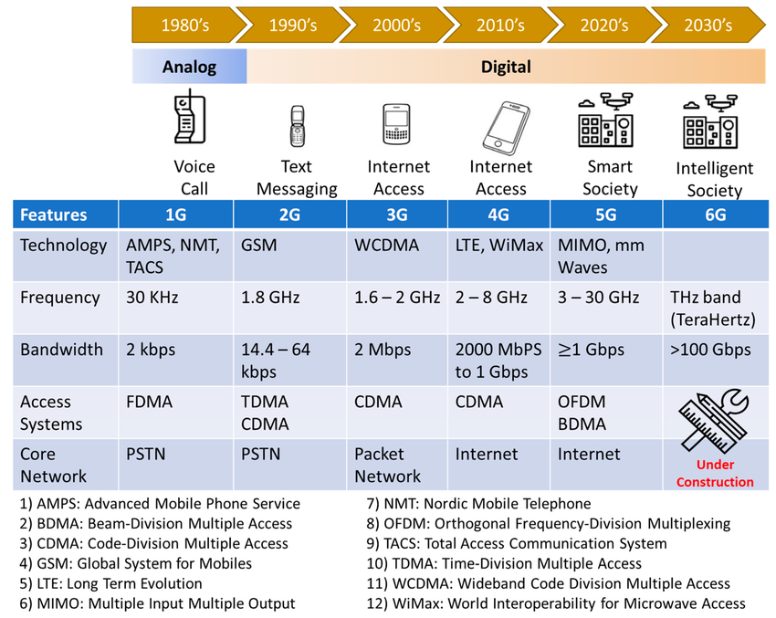
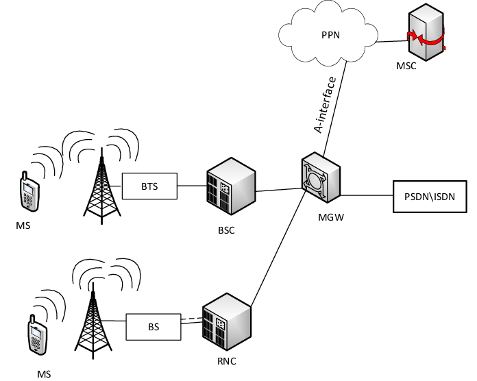
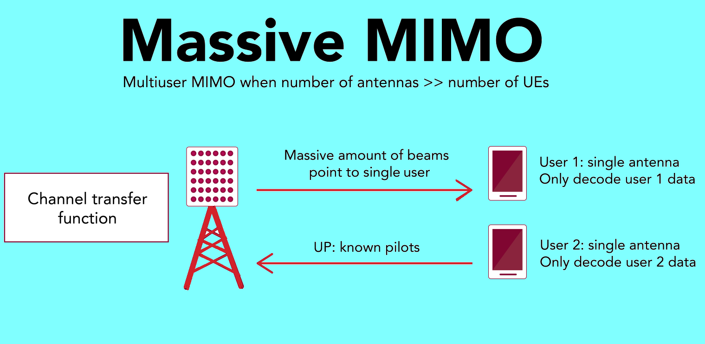

📱 Mobile Communication
🕰️ 1. Evolution from 1G to 5G
- 1G: Analog voice (AMPS, NMT)
- 2G: Digital voice (GSM, CDMA) with SMS
- 3G: Mobile internet (UMTS, HSPA)
- 4G: High-speed data, IP-based (LTE)
- 5G: Ultra-low latency, high bandwidth, IoT support

🏙️ 2. Cellular Architecture
- Cells: Each area served by a Base Transceiver Station (BTS)
- Frequency Reuse: Same frequency bands used in non-adjacent cells
- Handoff: Seamless transfer of ongoing calls/data sessions between cells
- Interference: Controlled by cell planning, reuse distance, and power control

Figure: Cellular system using hexagonal cells for frequency reuse
🔁 3. Handoff Animation (Call Transfer)
This animation shows a mobile user moving across cells and being handed off automatically between BTSs.
🛰️ 4. Key Technologies
- TDMA: Time Division Multiple Access (used in 2G)
- CDMA: Code Division Multiple Access (2G/3G)
- OFDMA: Orthogonal Frequency Division Multiple Access (4G/5G)
- MIMO: Multiple antennas for higher capacity and robustness

📲 5. Call Setup Process (Simplified)
- Mobile sends access request to nearby BTS
- BTS connects to BSC (Base Station Controller)
- BSC forwards to MSC (Mobile Switching Center)
- MSC routes call to destination
- On answer, voice channel is established
Each component in the mobile network (BTS, BSC, MSC) plays a role in handling connections, routing, and handoffs.
🧪 6. Quiz Yourself
Q1: What does a BTS do?
Answer: Serves mobile users in a cell by transmitting and receiving RF signals
Q2: Which technology is used in 4G for multiplexing?
Answer: OFDMA
Q3: What is the purpose of handoff?
Answer: To maintain connectivity as a user moves between cells